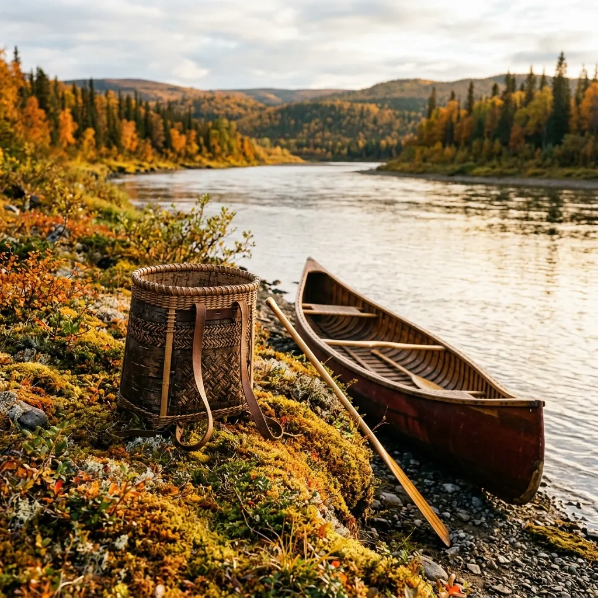
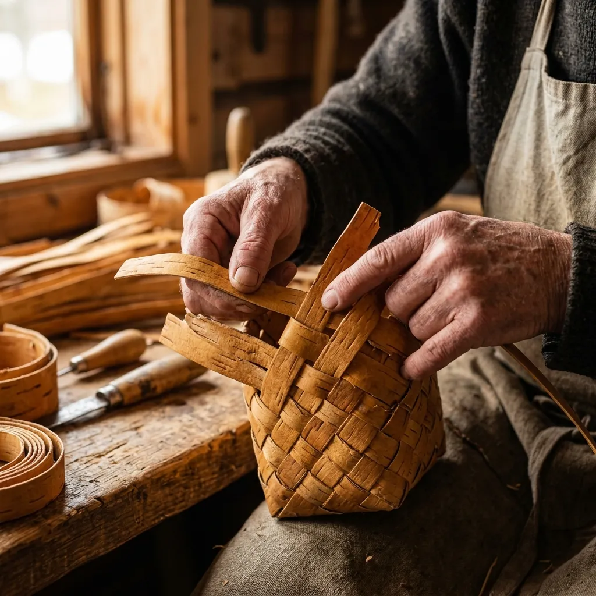
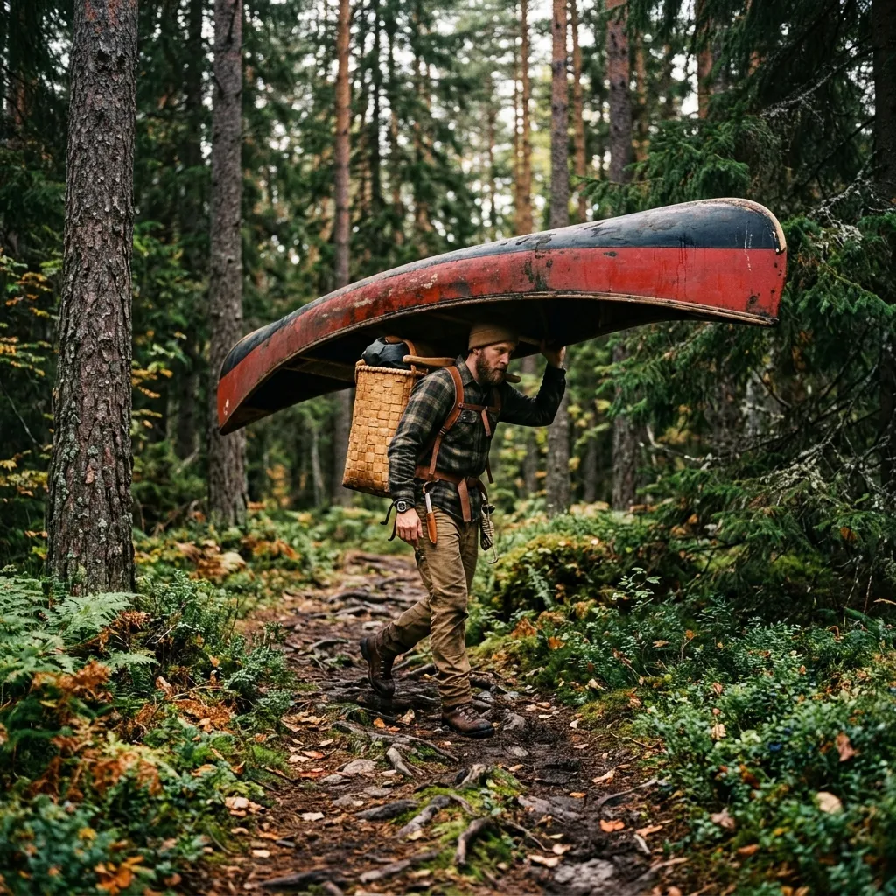

Traditional Birch-Bark Packbaskets and Pine-Tar Wilderness Gear
Sarek Birch-Bark Gear Guild weaves rot-proof sub-arctic packbaskets from winter-harvested näver and steam-bent Swedish ash.
Most modern synthetic backpacks are marvelous feats of petroleum chemistry right up until a sharp granite ledge or camp-fire spark melts through their ultralight nylon seams. We craft traditional Scandinavian packbaskets from winter-peeled birch bark, a natural bio-composite packed with waterproof betulin oils that repel fungal decay, insects, and sub-zero moisture for generations. Hand-woven in Jokkmokk and fitted with vegetable-tanned reindeer leather, our gear carries heavy expedition loads across tundra portages with timeless arctic reliability.
Submit Pack RequisitionWinter Näver Harvest & Hand-Woven Pack Mechanics
Peeling birch bark for heavy expedition gear requires waiting for the deep freeze of late arctic winter, when the tree’s sap recedes completely and the inner bark layer hardens into a dense, leather-like sheet. Harvesting during this dormant window ensures that the bark retains its maximum concentration of betulin—a natural resinous compound that renders the material permanently impervious to water, fungal rot, and wood-boring insects. We harvest only from mature timber scheduled for sustainable forestry thinning, taking care never to girdle living trees.
Once harvested, the bark is cured in dark cold-cellars before being hand-cut into uniform thirty-five millimetre strips. Our weavers interlocking these strips using a traditional double-walled diagonal weave pattern, creating a flexible, shock-absorbing basket structure that distributes heavy loads evenly across the hips without sagging. The top rim is reinforced with a steam-bent Swedish white ash hoop bound by split spruce roots, providing a rigid structural mouth that remains wide open during rapid river portages.
Unlike rigid plastic barrels that rattle against canoe thwarts or synthetic packs that absorb water when dunked in rapids, a näver packbasket floats naturally, wipes clean in seconds, and ages into a rich golden-amber patina over decades of hard field use. It is a piece of living arctic heritage, built to outlast its maker and quietly endure the wildest waters of the North.
01. Bark Chemistry
The secret to the longevity of our traditional packs lies entirely in the chemical composition of the winter bark. Betulin resin acts as a potent naturally occurring preservative. When a synthetic pack spends three weeks soaked by freezing rain on a tundra portage, mildew invariably begins to colonise the nylon weaves. In stark contrast, the dense concentration of betulin within the inner bark layer explicitly halts fungal growth.
Moreover, this biological resin offers exceptional resistance to the wood-boring insects that routinely decimate unprotected timber in the northern forests. The bark is essentially self-preserving, refusing to rot or soften even when submerged for extended periods, making it the perfect organic armour against the abrasive damp of the arctic summer.
02. Pack Models
We weave our packbaskets in three distinct capacities, each engineered for specific backcountry disciplines. The 35L Daypack is ideal for timber cruisers and naturalist excursions, sitting high on the shoulders and permitting unrestricted movement through dense birch thickets. Our flagship 55L Expedition model represents the historic standard for extended river journeys, offering a load capacity of up to 35kg while maintaining the rigid structure necessary for comfortable hauling.
For demanding logistical operations and multi-week arctic ventures, the 70L Portage master is the preferred choice. These gargantuan baskets provide enough vertical volume to swallow heavy canvas tents, cast-iron cookware, and thick wool blankets, distributing the tremendous weight securely across the trapezius and lower back without the need for internal aluminium stays.
03. Leather & Tar
A packbasket is only as dependable as its weakest attachment point. For our strapping systems, we rely exclusively on heavy vegetable-tanned reindeer leather cut from the thickest sections of the hide. Reindeer leather is historically proven to remain supple in freezing temperatures, whereas modern synthetic webbing becomes brittle and abrasive. We hand-rivet these robust straps directly to the steam-bent ash rims using solid brass hardware that will never rust or corrode.
Our internal canvas liners and optional protective covers are treated rigorously with hot Dalarna pine tar and organic linseed oil. This age-old waterproofing method yields a dense, deeply saturated canvas that laughs at torrential rain while smelling faintly of sweet woodsmoke, completely negating the need for fragile modern membranes or toxic chemical sealants.
04. Field Care
Despite their ruggedness, these baskets benefit immensely from rudimentary annual maintenance. As the seasons pass and the packs endure countless river portages and blistering sun, the natural oils within the bark will slowly begin to dry. We recommend a light conditioning rub with raw linseed oil at the conclusion of every paddling season to replenish the bark's flexibility and deepen its golden-amber patina.
Should the pack become encrusted with river mud or smeared with campfire soot, a stiff bristled brush and cold water is all that is required for cleaning. Never employ harsh chemical detergents or synthetic solvents, as these will aggressively strip the protective betulin resins and irreversibly damage the structural integrity of the bark weave.
Double-Walled Weaving & Ash Frame Construction

The structural brilliance of a traditional bark packbasket relies not on rigid mechanical fasteners, but on the inherent tensile strength of an interlocking diagonal weave. By doubling the wall thickness through a meticulous overlapping pattern, our craftsmen create a basket that dynamically absorbs the shock of heavy expedition loads while conforming naturally to the contours of the spine. When paired with an optional chest tumpline, the ergonomic efficiency is unparalleled, transferring the burden seamlessly from the shoulders to the stronger neck and back muscles.
Näver Weave
A robust double-walled 35mm diagonal weave that yields an incredible 4mm overall wall thickness, providing unmatched puncture resistance against jagged granite riverbanks.
Ash Rim
The structural mouth of the pack is forged from steam-bent Swedish white ash, lashed securely in place with meticulously split spruce roots for maximum flexibility and strength.
Leather Harness
We deploy dense 4mm vegetable-tanned reindeer leather for the shoulder straps, secured permanently to the wooden frame with solid hand-peened brass rivets.
Kiln-Burned Pine Tar & Reindeer Leather Conditioning
True arctic weather demands organic coatings that outperform brittle petroleum waxes. We hand-paint our heavy cotton canvas liners with a boiling mixture of hot Dalarna pine tar and pure linseed oil. As the hot tar cures into the canvas fibres, it creates an impenetrable barrier against standing water that refuses to crack in the bitter cold. The resulting fabric is stiff, remarkably resilient, and redolent with the earthy scent of traditional woodsmoke.
The vegetable-tanned reindeer leather harness fittings receive equal attention, conditioned with natural tallow to ensure they never stiffen or chafe, even when thoroughly soaked in freezing river water during arduous portages. This uncompromising dedication to natural materials guarantees that our gear will remain fully operational when synthetic alternatives have long since shattered.
100% Organic Materials · 0% Petroleum Synthetics · Built for -40°C Arctic Cold.
Field Dispatches from Sarek National Park

Paddling the Lule River with a 30kg Näver Pack
"The true revelation of the birch-bark basket isn't merely its profound aesthetic charm, but rather its remarkable buoyancy. When our canoe took on water in a heavy rapid on the lower Lule, the synthetic dry bags sank immediately to the floorboards. The 30kg näver packbasket, however, bobbed cheerfully at the surface, keeping our vital provisions entirely above the waterline while we bailed the hull."
— Excerpted from the field logs of J. Andersson, 2025.
Three Weeks off-Grid in the Rapadalen Valley
"We endured three consecutive weeks of torrential, freezing autumn rain while charting the upper reaches of the Rapadalen Valley. The constant dampness turned our boots to mush and fostered mildew on the tent fly, but the birch-bark packs shrugged off the deluge effortlessly. The betulin resin proved to be a miraculous barrier, keeping the interior canvas liner bone dry despite the relentless sub-arctic weather."
— Excerpted from the expedition journal of K. Lindberg, 2024.
Verified Field Guide Endorsements
"A woven birch bark pack absorbs the punishing blows of rocky river portages far better than any rigid plastic barrel. The inherent flex of the diagonal weave prevents shattering upon impact, saving our provisions on more than one disastrous capsize."
"The natural insect-repelling properties of betulin bark are absolutely extraordinary. While the mosquitoes swarmed our modern nylon gear mercilessly, they actively avoided settling on the raw näver baskets during our entire tundra crossing."
Over 450 Hand-Woven Packs Deployed Across Arctic Lapland Since 2018.
Pack Maintenance & Craft Enquiries
How heavy is a birch-bark packbasket compared to a modern nylon backpack?
A standard 55L näver packbasket weighs approximately 2.8kg when completely dry. While marginally heavier than an ultralight frameless nylon sack, the integrated rigidity of the bark weave eliminates the need for heavy internal aluminium stays, resulting in a highly comparable overall base weight.
Will the birch bark crack or split in sub-zero winter temperatures?
The deep-winter harvested bark used in our weaving process is explicitly chosen for its extraordinary resilience in freezing conditions. When properly conditioned with linseed oil, the bark remains remarkably pliable and will not shatter, even during rigorous use in -40°C temperatures.
How do I care for the pine-tar coated canvas liner over time?
The canvas liners are heavily impregnated with hot pine tar and are designed to endure years of abuse. However, if you notice water failing to bead on the surface after several seasons, you can gently re-apply a light, warm mixture of Dalarna pine tar and raw linseed oil using a stiff brush.
Are all birch bark materials sustainably harvested without harming living trees?
Absolutely. We operate under strict Swedish forestry guidelines, harvesting our näver exclusively from mature timber that has already been designated for sustainable winter felling. We never strip bark from living trees that intend to remain standing in the forest.
Can custom pack dimensions be woven for specific canoe thwarts?
Yes, as a traditional guild, we frequently weave bespoke packbaskets designed to nestle perfectly between the thwarts of specific timber or canvas canoes. Please provide detailed beam measurements when submitting a custom requisition request.
Requisition a Hand-Woven Expedition Pack
Hand-crafted in limited seasonal batches in Jokkmokk. Current weaving lead times sit at 4 to 6 weeks.